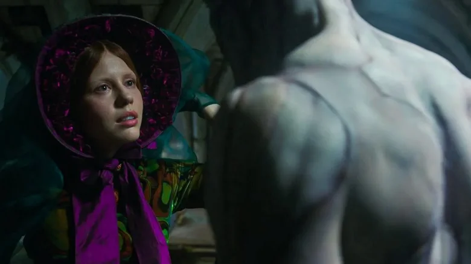

La adaptación cinematográfica de "Frankenstein" de Guillermo del Toro, atesora la obsesión y el amor del director por el material original de Mary Shelley (siempre estuvo en su punto de mira adaptar esta novela al cine).

Gusto por lo gótico.
Del Toro, conocido por su estilo gótico, utiliza decorados majestuosos, una fotografía exquisita (a cargo de Dan Laustsen), donde el blanco y el rojo destacan.
La Criatura (interpretada por Jacob Elordi) tiene una apariencia delicada y físicamente imponente que subraya su vulnerabilidad y humanidad frente al mundo.
Y en cuanto al uso de efectos destaca el gusto de Del Toro por los mecanismos como ocurre desde los tiempos de su primeriza Cronos (1993), aunque en este film pueda haber un abuso de efectos digitales (los sueños de Victor o la manada de lobos).
La adaptacion.
La película es fiel al espíritu y los temas filosóficos de la novela. El mayor pecado de Víctor Frankenstein (interpretado por un magistralOscar Isaac) no es crear vida, sino su manifiesta falta de humanidad y sobre todo el abandono de su creación.
La película es en un emotivo cuento sobre el perdón y el rechazo social.
La película refleja las obsesiones humanistas del director, ofreciendo una mirada tierna y empatica hacia el monstruo. Bajo el prisma de Elizabeth (interpretado por *Mia Goth)la criatura es un ser puro al que amar sin condiciones, rasgos romanticos ya dibujados en su anterior largometraje La forma del agua (2017)
Conclusion.
La pelicula es visualmente deslumbrante, emotiva con un poso romantico y espiritual no alcanzado en anteriores adaptaciones del mito (siendo la de Kenneth Branagh una de mis preferidas) y supera para el que escribe los mejores logros en la carrera de Del Toro.
;